YURIINOTE / GUIDE / 2026-11-11
YuriiNote 図解付き操作マニュアル
既存のYuriiNote 1.1.0と今回の開発ブランチを調べ、実際のElectron画面で主要操作を確認しました。画面は説明用のサンプルデータです。日本語UIのスクリーンショットを使っています。
01 インストール・初回起動・保存先
保存先（vault）は、ノート・索引・画像などを保存する普通のフォルダです。
- Releasesで自分のOS用の配布ファイルを探し、Windowsはインストーラー、macOSはDMG、LinuxはAppImageを使います。開発ブランチの変更が含まれるとは限りません。
- 開発版を試す場合はGitHubから対象ブランチを取得します。Node.jsとnpmを用意し、リポジトリ内で
npm ci→npm run build→npm startの順に実行します。 - 初回画面の「フォルダを選ぶ」で既存のvaultを開くか、新しい場所を選びます。見つかったvaultがあれば、その候補を押して開けます。
- 起動後は左下の⚙️「設定」→「保存先（vault）」の「変える…」で変更します。保存中の処理が完了してから切り替わります。
- 「言語」で日本語・Englishを選びます。文字が小さければ「画面全体の大きさ」「本文の文字の大きさ」を調整します。
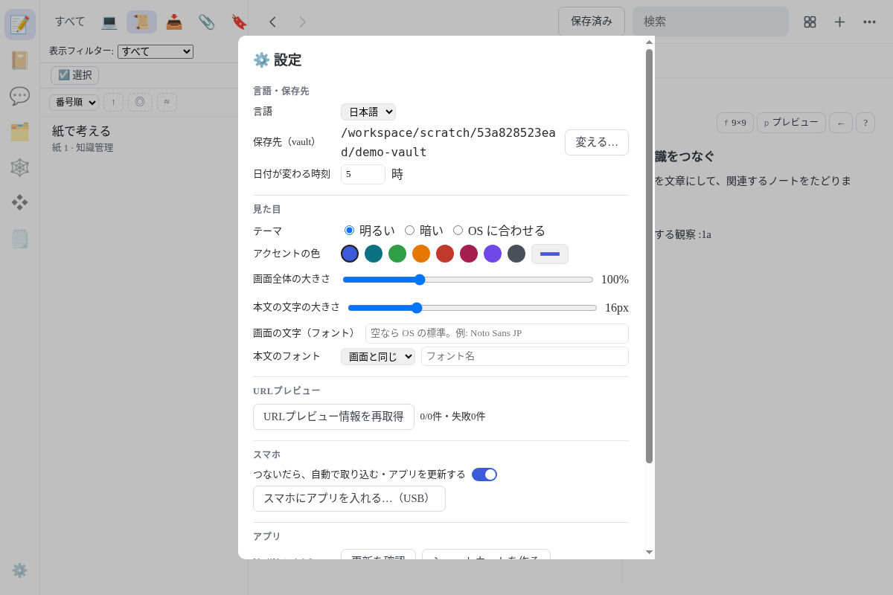
123402 画面構成・タブ・保存状態
左の縦列で機能を選び、左一覧から項目を開き、中央で読み書きします。右欄には関係する情報が出ます。
- 📝でノート、📔で日記、💬でチャットメモ、🗂で共通Index、🕸でグラフ、❖で曼荼羅、🗒でカードを開きます。
- ノートを左一覧で押すと中央に開きます。右欄のキーワード→自トピック→トピック→親→子→バックリンクをたどれます。
- 上部の＋で新規作成メニュー、検索欄で検索、左右の矢印で移動履歴を操作します。
- Ctrl+Tで空のタブ、Ctrl+Wでタブを閉じます。Ctrl+Tab／Ctrl+Shift+Tabでタブ移動、中クリックで背景タブに開けます。
- 入力後、上の「保存中…」が「保存済み」になることを確認します。保存エラー表示を押すと再試行します。
画面図は日本語UIです。タブと本文を含む編集中の内容は、表示フィルターで対象外になっても保持します。
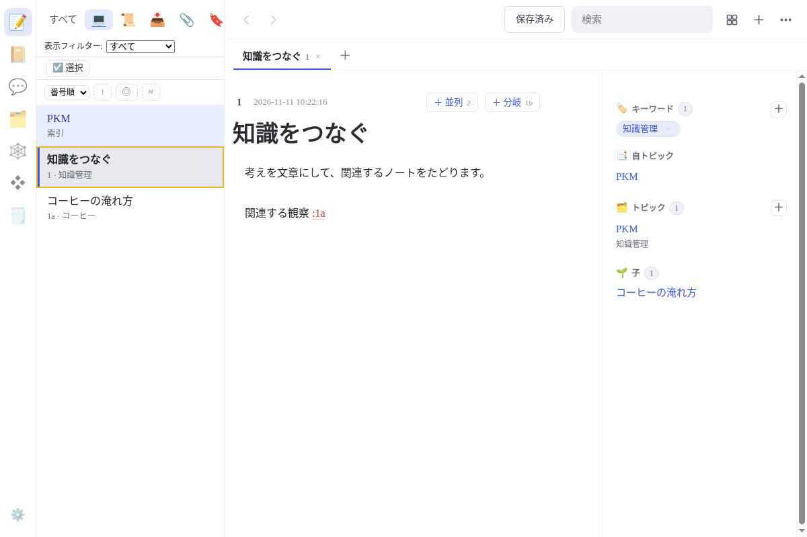
123456実装の参照先
03 IDなしノートを作り、編集する
まず書いてから整理できます。タイトルと本文は別々に編集します。
- ノート画面で右上の＋を押し、「📝 ノート」を選びます。IDなしのノートが開きます。
- 「タイトル」を押して題を入力します。本文欄を押し、普通の文章やMarkdownを書きます。
- 見出し・箇条書き・チェックボックスを入力できます。「表」ボタンは表のひな形を挿入します。
- 本文のCtrl+ZでUndo、Ctrl+Shift+ZまたはCtrl+YでRedoを行います。保存状態を確認してから別のノートへ移れます。
- IDなしのノートは左の未整理（📥）タブで探せます。IDを付けるまで、そのまま書き続けても構いません。
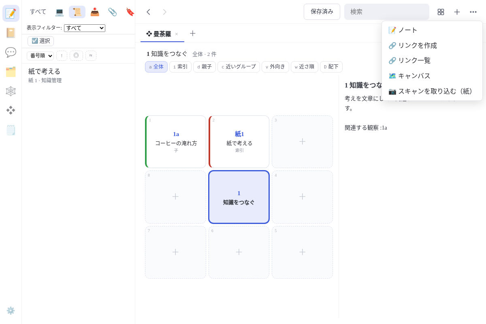
1234実装の参照先
04 IDの付与・変更・分岐・並列
紙とデジタルの番号は別体系です。同じ1aが両方にあっても別ノートです。
- IDなしノート上部の「IDを付ける」を押します。ID探索画面でノートを探し、基準となる位置を選びます。
- 直接指定・分岐・並列から番号の付け方を選び、候補と区分を確認して決定します。紙とデジタルを同一視しないでください。
- 番号付きノート上部の「＋ 分岐」で子側へ、「＋ 並列」で同じ段の次へ新しいノートを作れます。1→1a、1a→1a1が分岐、1a→1bが並列の例です。
- ID自体を押すとコピーします。番号を変更・解除するときはノートの「⋯」メニューの「IDを変更・解除」から明示的に操作します。
- 右欄の親・子を押すと移動します。本文に参照を書いた別ノートは参照先のバックリンクに現れます。
番号は内容の関係から決めます。「次のページだから」という理由だけで、毎回IDを深くしません。
05 全画面共通の表示フィルター
検索欄とは独立した表示設定です。元データを消したり移動したりしません。
- 左上の「表示フィルター」を開きます。
- 「すべて」「紙のみ」「デジタルのみ」を選びます。例えば共有キーワードに1a(p)と1a(d)があれば、紙のみでは1a(p)だけ表示します。
- Index・トピックIndexの参照・検索候補・親子・バックリンク・似たノート・グラフ・カード・曼荼羅を確認します。各ビュー固有の絞り込みも重ねて適用されます。
- 対象外のノートを編集中だった場合、本文を保持したまま非表示になります。フィルターを戻すと同じ編集状態に戻れます。トピックIndexの編集欄は保存対象の原文を扱います。
- アプリを再起動しても最後の選択を復元します。チャットメモ・通常の日記本文・単独ファイルはデジタルとして扱います。紙のみの日記表示では、取り込んだ紙の日記画像だけを表示し、デジタル本文は保持したまま隠します。
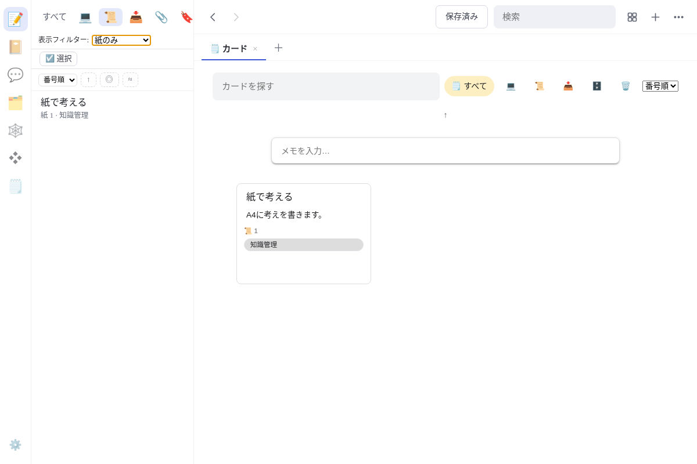
12306 共通Indexにキーワード・読み・IDを登録する
キーワードから紙・デジタル両方のIDを引けます。未取り込みの紙IDも登録できます。
- 左の🗂またはIndex（🔖）タブで共通Indexを開きます。キーワードは読み仮名のあいうえお順でまとまります。
- 一覧上の「＋」を押します。「キーワード」「読み仮名」を入力します。自動候補の読みが違えば直します。
- 「ノートを検索」にタイトル・ID・本文の語を入れ、候補を押してIDを追加します。候補には紙／デジタルが表示されます。
- 「対応するID」欄では手入力もできます。紙の未スキャンIDは
9a(p)、既存デジタルは1(d)のように書き、空白で区切ります。区分省略は紙です。 - 並び位置のプレビューを確認し、「保存」を押します。読みとIDが共通Indexに現れます。
- キーワード部分を右クリック→「Indexを編集」で読み・対応ID・名前を変更できます。「キーワードを削除」は索引からの登録解除で、ノート本体は残ります。
- 検索結果のキーワード文字を押すと、絞り込みを外して共通Indexのその位置へ移動し、前後の語を確認できます。
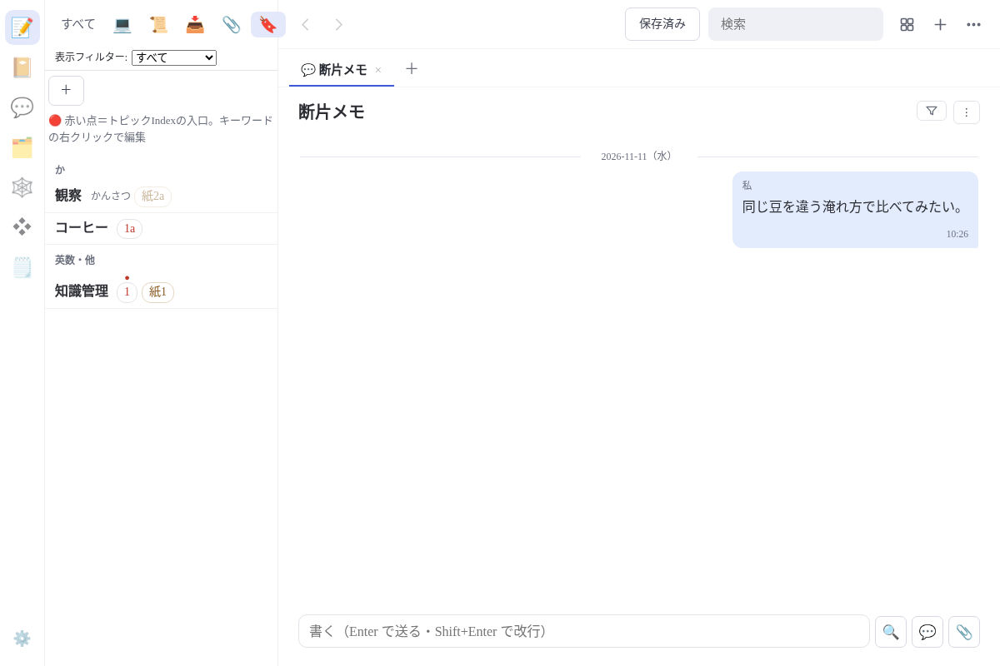
123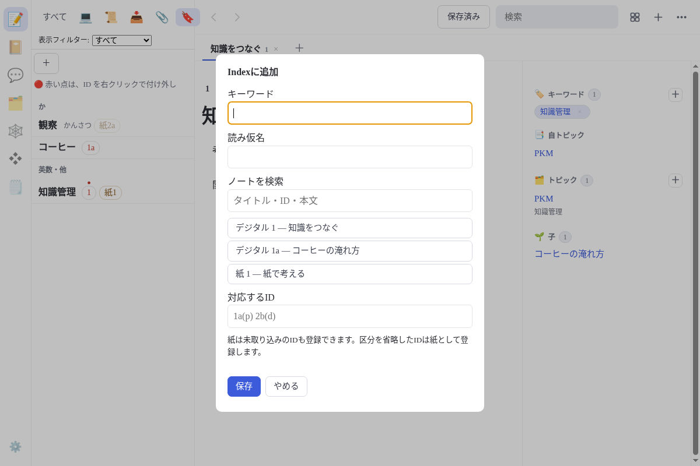
1234507 トピックIndexを作り、記号を選ぶ
グローバルIndexは全体の入口、トピックIndexは特定の話題の参照先を整理する場所です。
- 番号付きノートを開き、右欄の「トピック」の＋を押します。
- 既存の索引を検索して選ぶか、名前欄横の＋から新しい索引名を入力して作ります。入口のIDと紙／デジタル区分を確認します。
- 索引を開き「編集」を押します。1行に
コーヒー 1a 2(p)のようにキーワードとIDを書きます。区分を省略したIDは索引の入口と同じ側です。 - 行頭に
^、+、=を書くか、その行にカーソルを置いて「参照の種類」を選び「カーソル行に適用」を押します。 - 「完了」で表示に戻り、↑・★・●が期待した意味で表示されることを確認します。「名前・親」で索引名と入口を確認・変更できます。
赤い点はIDに対応するトピックIndexがある印です。行頭の●（まとめ・進捗）とは違います。1つのIDに対応するトピックIndexは1つで、紙とデジタルの同一IDは別々です。
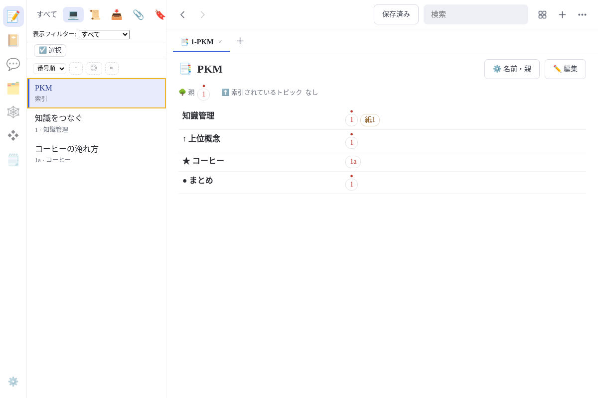
1234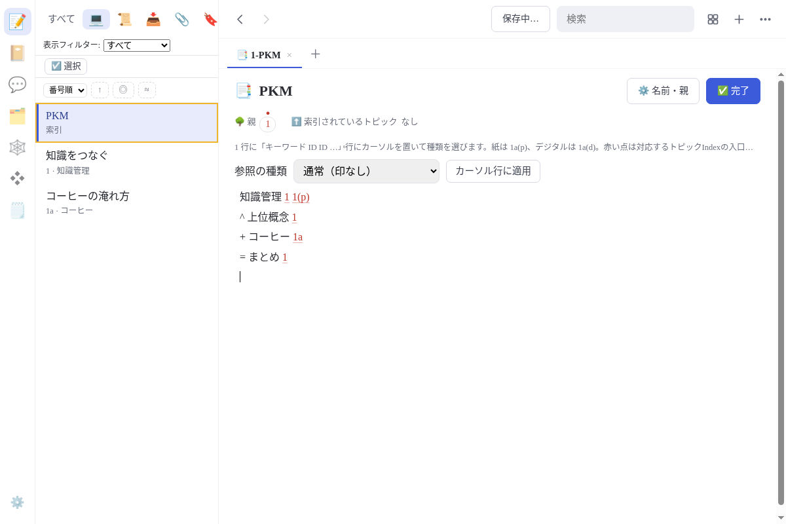
1234| 入力 | 表示 | 意味 |
|---|---|---|
^ | ↑ | 上位概念 |
+ | ★ | 別のトピックIndex |
= | ● | まとめ・進捗 |
| なし | なし | 通常の項目 |
実装の参照先
08 トピックIndexに「:」で検索追加する
通常本文のリンク形式と、索引の「キーワード ID」形式を使い分けます。
- トピックIndexを開き「編集」を押します。追加したい位置に新しい行を作ります。
- 半角
:を入力します。続けてタイトルやIDの検索語を入力すると候補が絞られます。 - タイトル・ID・紙／デジタル区分を見て、↑↓で候補を選びEnter、または候補をクリックします。
- 索引には
紙で考える 1(p)のような行が挿入されます。通常本文の:1(p)形式とは異なります。 - 必要なら同じ行で参照種類を指定します。Escは検索を中止して入力済みの文字を残します。Ctrl+Z／Redoで挿入を戻す・やり直すこともできます。
- 「完了」で行とリンク先を確認します。フィルターが紙のみなら、候補も紙だけになります。
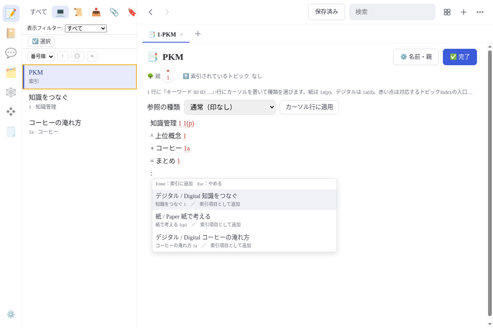
3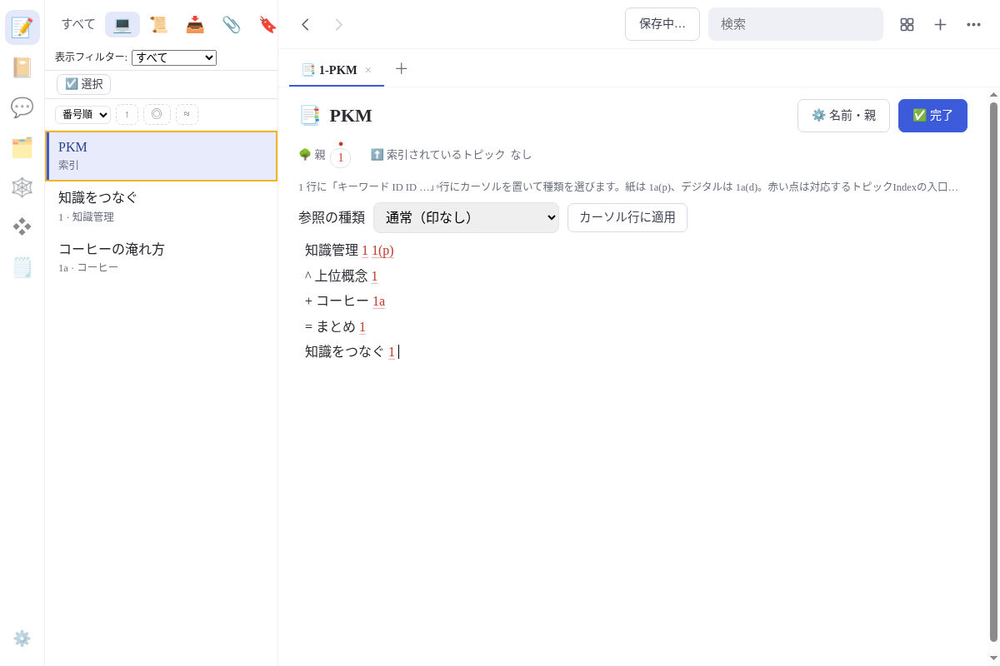
45609 通常ノートの参照・検索・バックリンク
検索結果と参照候補は別の操作です。通常ノートでのコロン検索は従来のリンク形式を維持します。
- 上部検索欄に文字を入れます。Index→トピックIndex→ノートのまとまりで結果が出ます。Escで検索を終了できます。
- 本文で
:を入力し、語を入力して候補を選びます。Enterは前置参照、Shift+Enterは後置参照です。 - 手入力なら
:1aは続きへの参照、1a:は引用元のノート、1a(1)は別ノートの番号箇所を示します。紙なら:1a(p)、デジタルなら:1a(d)と明示できます。 - 同じ本文の
(1)を目印にし、(1):でその箇所を受けた文章を書けます。リンクを押して移動し、戻る矢印で戻ります。 - 参照先ノートの右欄「バックリンク」で、こちらを参照するノートと文脈を読みます。関連ノートは「≈ 似たノート」からも探せます。
10 紙ノート・スキャン・未取り込みID
紙ノートは実物のIDを維持して取り込みます。取り込み前でもIndexから実物を探せます。
- ノート画面の＋→「スキャンを取り込む（紙）」を選び、取り込む画像を選択します。
- スキャン画面で画像を確認し、紙IDと必要なキーワードを入力して登録します。紙側に同じIDがすでにある場合は重複として止まります。
- 左の紙（📜）タブからノートを開きます。中央に紙画像と編集欄が表示されます。検索用の文字や題を入力できます。
- 「表示フィルター」→「紙のみ」を選び、Indexや検索から目的の紙IDを探します。画像をまだ取り込んでいないIDは淡い欠損表示になります。
- スキャン前のIDは共通Indexの＋から
9a(p)のように登録できます。後で同じ紙IDを取り込むと関連付けられます。 - 紙の日記はスキャン画面の日付を指定し、「日記」として取り込みます。Folgezettel IDではなく、その日の日記に画像が入ります。
紙の日記画像は日記レコード内に保存します。「紙のみ」で日記を開くとスキャン画像だけを表示できます。通常のFolgezettel紙ノートとは別の、日付で探す記録です。
11 チャットメモの送信・トピック・編集
短い文章を吹き出しとして残し、後からノートに整理できます。
- 左の💬を押し、一覧のトピックを選びます。新しいトピックは一覧上の＋→名前入力→「作る」またはEnterで作成します。
- 下の入力欄に書き、Enterで送信します。Shift+Enterは改行です。入力中の日本語変換のEnterと送信は区別されます。
- 一覧で別のトピックを押すと切り替わります。下の💬操作から「新しい下位トピックを作成」を選べます。以後の投稿にはそのトピックの上位設定を引き継ぎます。
- 吹き出しを右クリック→「編集」で書き直し、Enterで完了、Escで中止します。
- 吹き出しの↩で返信先を選び、入力して送信します。「⇆」で既存の返信先を追加・解除できます。本文の「:」検索や@からメモ・ノートへの参照／言及を追加できます。
- 右下の📎で添付を追加するか、チャットへファイルをドラッグします。メモ内のリンクから添付を開けます。
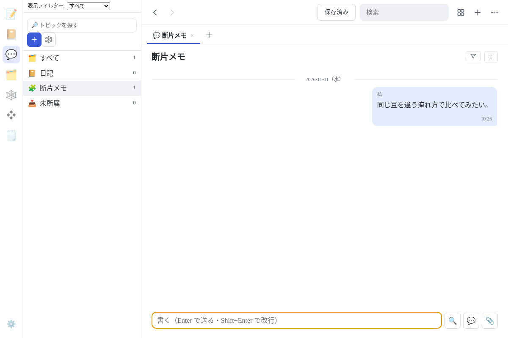
12345612 チャットの複数選択・ノート化・日記連携
ノート化は元のメモを残し、通常の編集可能なノートから参照できるようにする操作です。
- チャット右上の⋮→「複数選択」を選び、必要な吹き出しを選択します。右クリック→「選択」でも開始できます。
- 下の「ノート化」を押し、タイトルや整理先の設定を確認して作成します。1件だけなら右クリック→「ノート化」でも行えます。
- 作成された通常ノートで文章を追記します。展開された元メモを編集すると表示も追随します。元の吹き出しの📝からノートへ戻れます。
- 「リンクを作成」では複数のノートやメモをまとめ、タイトル・順序・参照範囲を指定できます。元データのコピーと参照を混同しないでください。
- チャットの「日記」や記録用トピックを選んで投稿すると、その日の記録にも時刻付きで反映されます。右上の⋮→「日ごと」で日付を指定して確認できます。
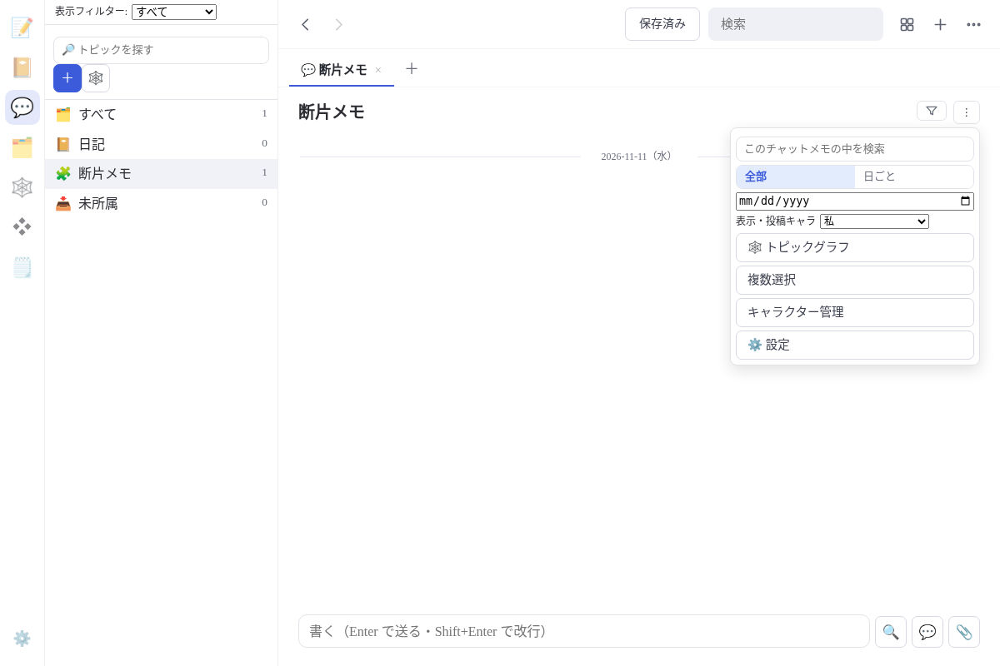
123413 今日・過去の日記と夢・仕事の記録
日記は日付と記録の種類で管理します。Folgezettelの番号付きノートとは分けて扱います。
- 左の📔を押し「今日の日記」を押します。今日の日付の本文が開きます。
- 過去の日は左の日付欄に日付を指定して「開く」、または一覧の日付を押します。本文右上の←→でも前後の日へ移れます。
- 上部のタイトルは任意です。本文を書き、保存状態を確認します。「今日のノート」から、その日に作ったノートを参照できます。
- 左の「＋ ⚙」で記録の種類を追加・整理し、「夢」「仕事」などを作ります。記録の上位関係も設定でき、複数の上位に属する記録も扱えます。
- 種類を選び直して、その種類の日付を開きます。日付が変わる時刻は設定で変更でき、初期値は朝5時です。
- 紙の日記画像を取り込む場合は＋のスキャン操作で日付を指定して日記に登録します。本文の「紙の日記」から画像を読めます。
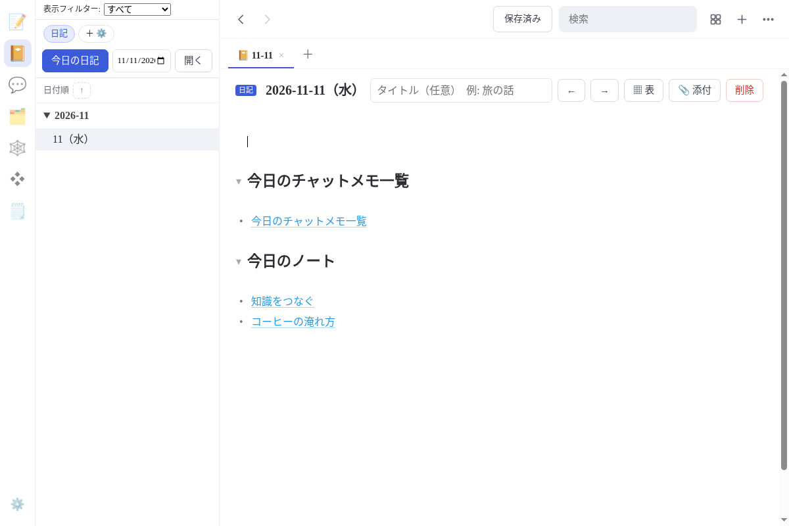
1234514 なりきり・キャラクター・返信と引用
現在の実装ではキャラクターはチャットメモに統合されています。旧ガイドの「＋→なりきりチャット」という新規作成手順は現行メニューにありません。
- 💬でチャットを開き、右上の⋮→「キャラクター管理」を押します。
- 「新しいキャラクター」に名前を入れて「保存」を押します。既存キャラの名前変更や「一覧から非表示」もこの画面で行います。
- ⋮の「表示・投稿キャラ」でキャラを選び、下の入力欄から投稿します。別の役で書くときは同じ選択欄を切り替えます。
- 発言の↩で返信し、@や「:」検索で別の発言・ノートを参照します。引用した文章はリンク先とともに確認します。
- 旧なりきりデータは保持したままチャットへ移行する処理があります。旧データを直接開いた場合は旧専用画面の「❝ 引用」や役の切替UIが残ります。現行チャットの手順と区別してください。
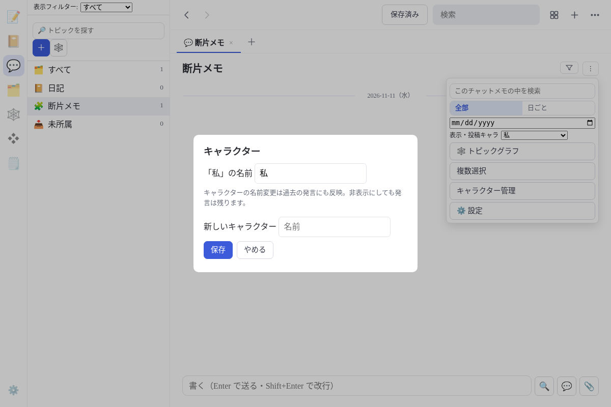
12315 キャンバスに箱と線を配置する
キャンバスはノートの一種で、IDなしから作れます。
- ノート画面の＋→「キャンバス」を選びます。タイトルを入力します。
- 点線のある空白をクリックし、文字を入力します。編集を終えるには欄の外を押します。
- 箱を選択して「↗ 線」を押し、つなぎたい相手の箱をクリックします。箱はドラッグで移動します。
- 「＋ ノート」で既存ノートを検索して引用し、「＋ 画像」で画像を追加できます。
- 線をダブルクリックしてラベルを付けます。Ctrl+ホイールや＋／−で拡大縮小、「全体」で全体を表示します。
- 箱や線を選びDeleteで削除します。Escで選択・接続操作を解除できます。
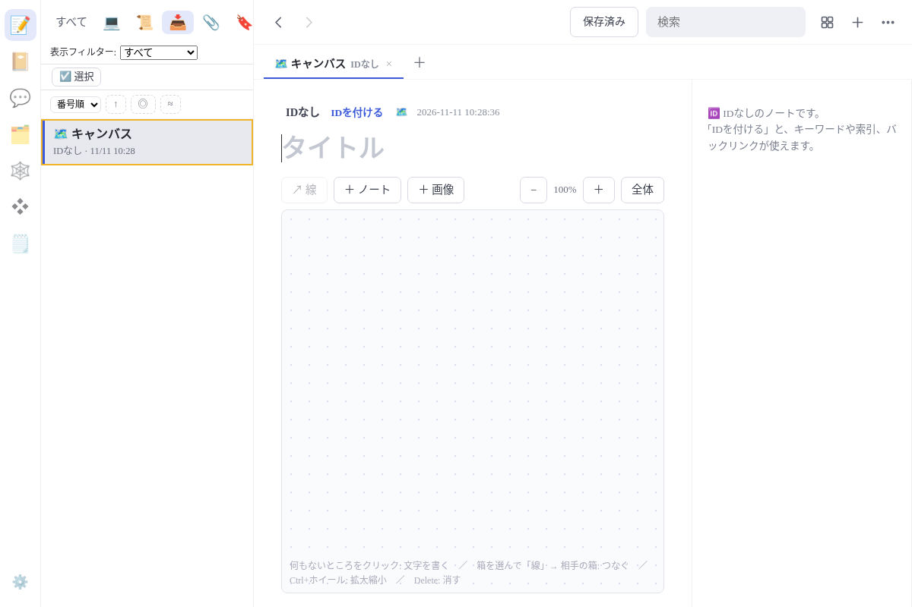
123456実装の参照先
16 グラフ・カード・曼荼羅・似たノート
同じノートを、関係・見た目・近さで探せます。表示変更でノートのIDは変わりません。
- 左の🕸でグラフを開きます。右上のリンク図／木の図を切り替え、⚙️で表示条件を調整します。点を選んで内容を確認し、ダブルクリックで開きます。
- グラフ内の紙表示・孤立ノートなどの条件と、全体の表示フィルターは両方適用されます。見つからないときは双方を確認します。
- 左の🗒でカードを開きます。カードを押すとその場で編集でき、外を押すかEscで閉じます。画面内の種類・検索・並び順も指定できます。
- 左の❖で曼荼羅を開きます。中心と周囲のノートを見て、項目を選んで移動します。「9×9」で広く表示し、「プレビュー」で本文を確認できます。
- ノートを開き一覧の「≈」、または文字入力していないときのsキーで「似たノート」を開きます。本文・キーワード・リンク・索引の基準を選んで候補を比べます。
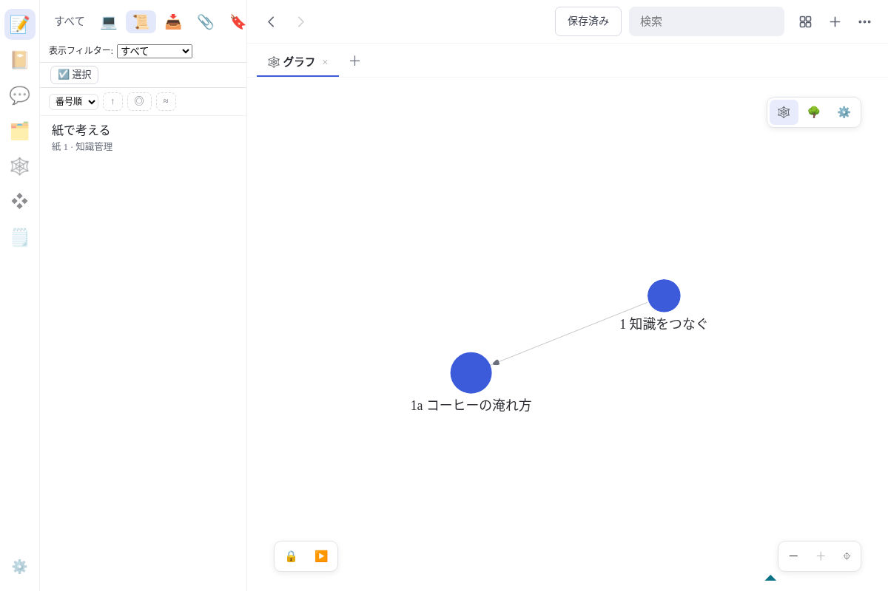
123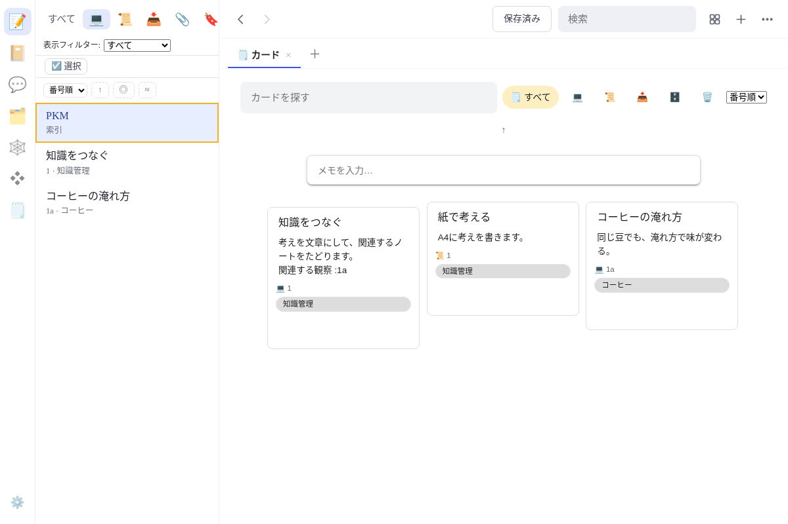
123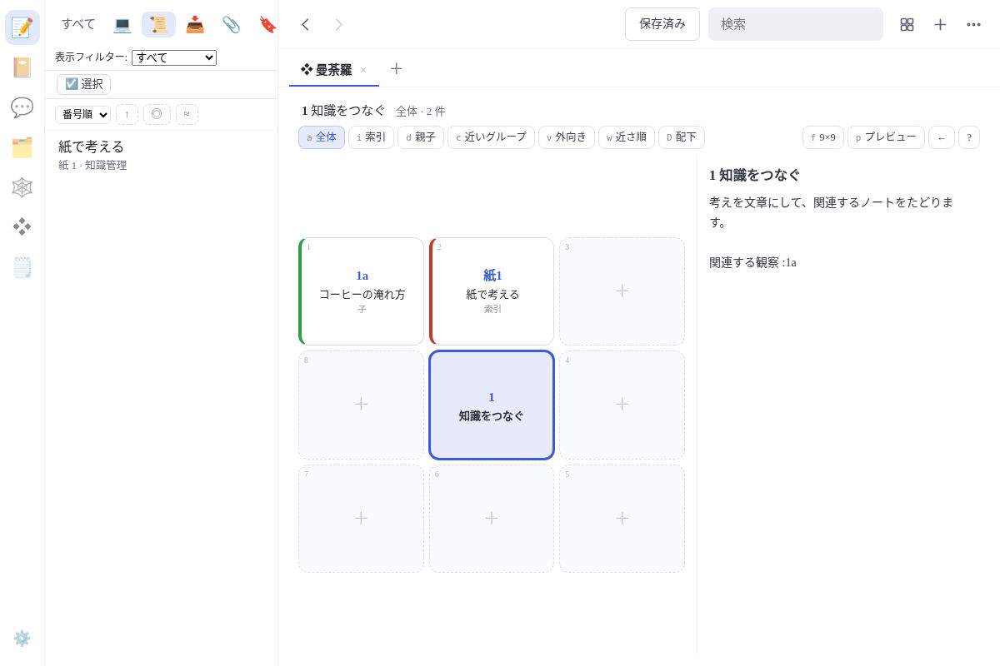
1234517 添付・複数選択・エクスポート・削除と復元
操作の対象を確認してから、一括操作を行います。エクスポートは一時的なMarkdownの確認・コピーです。
- ノートの「📎 添付」でファイルを選びます。ノートへドラッグ、画像の貼り付けでも追加できます。画像は本文中、その他はリンクとして表示されます。
- 左のファイル（📎）タブで取り込み済みファイルを探し、題や説明を付けられます。
- ノート一覧の「☑ 選択」を押し、対象を複数選びます。「全部」「コピー」「リンクを作成」「≈ 似たノート」などを選べます。Escまたは「やめる」で選択を終了します。
- 「エクスポート」で対象を確認し、必要なら関連先や番号範囲を加え、「一時タブで確認」または「コピー」を押します。必要なファイル保存は自分で行います。
- 「削除」は確認後にノートを.trashへ移します。復元はカード画面の🗑を選び、対象の「戻す」を押します。
- 元データの控えを取りたいときは保存先フォルダ全体をコピーします。表示フィルターはバックアップやデータ移行の代わりではありません。
実装の参照先
18 スマートフォン連携・アプリ更新
スマホ連携はUSBとADBを使います。クラウド同期として説明しないでください。
- Android端末でUSBデバッグを用意し、PCへUSB接続します。PC側でADBから端末が認識され、端末で接続を許可している必要があります。
- 設定→「スマホにアプリを入れる…（USB）」を押し、案内に従います。対応APKの同梱・取得状況は配布物によります。
- スマホで記録した後、PCの⋯メニュー→「スマホのメモを取り込む…（USB）」を使うか、設定の自動取り込みを使います。
- 未整理メモ・日記／記録トピック・番号付き紙スキャンなど、内容に応じてPCの保存先へ入ります。実機で取り込み結果を確認してください。
- アプリ更新は設定の「更新を確認」から行います。Git版・AppImage・インストーラー版で更新方法が異なり、案内が出たら保存完了後に進めます。
- 作業ブランチの機能を試す場合は、ブランチを明示してソースから起動します。更新ボタンだけで未統合のPRが入るわけではありません。
この文書の実画面確認はLinux上の開発版です。Windows/macOSのインストーラー、USB実機転送、配布版の自己更新は今回実機検証していません。
19 キーボード操作の早見表
ショートカットは入力欄・一覧・専用ビューなどのフォーカスによって役割が変わります。
- Ctrl+Fで検索欄へ移動します。Escで検索を終了します。
- 通常ノートではCtrl+NでIDなしノートを作れます。番号付きノートのCtrl+B／Ctrl+Hは分岐／並列です。
- 本文ではCtrl+ZでUndo、Ctrl+Shift+Z／Ctrl+YでRedo。候補表示中は↑↓・Enter・Escを使います。
- 一覧を操作しているときは↑↓またはj/k、←→またはh/lで移動します。iは編集欄、sは似たノートを開きます。
- タブ操作はCtrl+T、Ctrl+W、Ctrl+Tabです。チャット入力ではEnterが送信、Shift+Enterが改行です。
メニューやボタンの表示を優先してください。OSで予約されたキーや日本語入力中には、同じ操作が使えない場合があります。